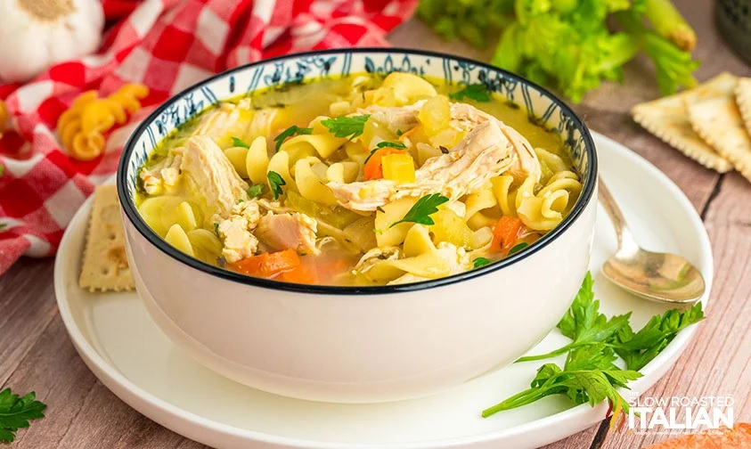
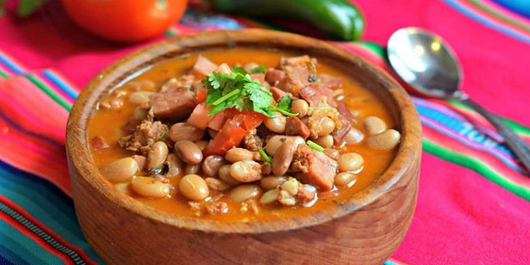

|

Pollo en caldoEl pollo en caldo con arroz es un plato tradicional que combina arroz cocido con pollo y, a menudo, con una variedad de verduras y especias. Este plato es conocido por su simplicidad, versatilidad y sabor reconfortante en días fríos o cuando alguien está enfermo. Receta |

Carne AsadaLa carne asada es un plato muy popular, especialmente en América Latina y en el suroeste de Estados Unidos. Consiste en carne de res, generalmente cortes como falda o arrachera, que se cocina a la parrilla. ¿Un asadito? |
Lenteja¿Lenteja VS Frijol? |

HeladoEl helado es una combinación de: leche, crema, azúcar y el sabor que uno prefiera. Siempre debe estar congelado o se derretirá. Para conocer más sabores |
Pollo AsadoEl pollo asado se prepara cocinando un pollo entero en el horno. El resultado es un pollo con una piel dorada y crujiente por fuera y carne tierna y jugosa por dentro. ¿Quiere preparar uno? |

FrijolPara preparar frijoles charros: Añade chorizo, tocino, jitomate, chile y otros ingredientes para hacer una versión más elaborada y sabrosa. Tipos de frijoles |